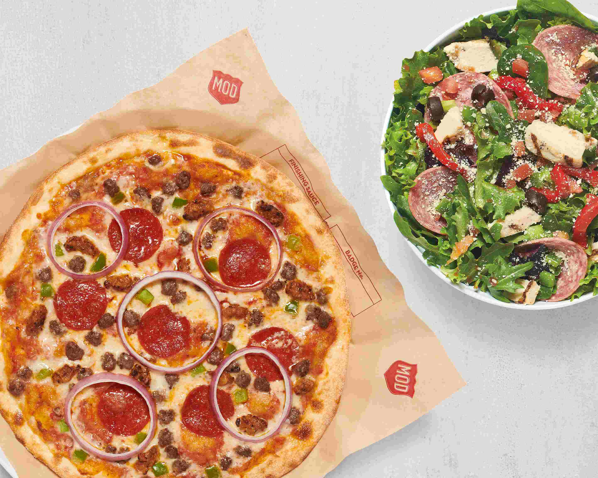
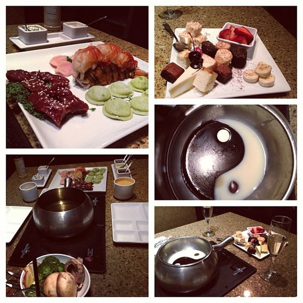

I am originally from St Louis, Mo and graduated from
high school in 2012. Afterwards I moved to Springfield, Mo
Since then I have worked multiple Jobs, heres a few of them.
- MOD Pizza
- Imo's Pizza
- The Melting Pot
- Capitol Logisitcs

My first Job after moving back to saint Louis was MOD pizza.
I worked in the Chesterfield location and at the time MOD
was a new company. I was a part of the first crew.
It was a learning expierence and I learned
how things go from concepts to reality.
I worked here for about a year before I moved on.
My next Job was Imo's Pizza, it was far more laid back,
but understaffed and consistantly more busy. It was very low skill
and I believe the biggest skill I gained was learning to deal with stress
and work with difficult people.

The job I gained the most expierence at was the Melting Pot.
Here I became a manager of what was percieved to be a "Higher Class"
restuarant.In reality (outside of the head chef), majority of employees
had no formal training. I did learn a lot on the job and was able to manage a kitchen,
I was able to keep servers and cooks on the same page while making the entrees.
This job really increased my people skills and I enjoyed my 3 years there.
I joined Capitol Logisitcs, when I was ready to leave the food industry.
Capitol Logistics, delivered packages for amazon and that was my original position, delivery driver.
I did that for year, until management began trusting me with more task, such as taking the van to be repaired.
then I began dispatching and whatever else was asked of me. I had plans to go into management, but then I got this opportunity from Launchcode.
Hopefully the next thing I add to my list is Software Developer.